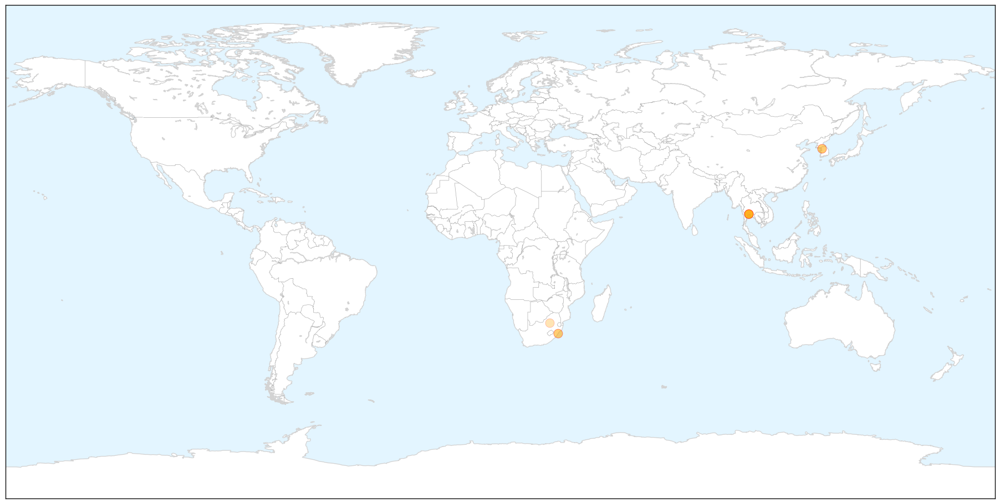
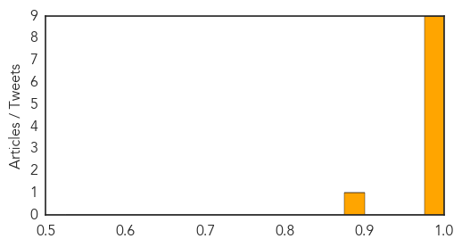

Swine Flu
30-Day Web Trend
1 alerts, 0 warnings

30-Day Twitter Trend
2 alerts, 0 warnings

Article Locations

X

Article Confidences
Top Articles:
- 1.000
- Swine flu: no outbreak in KZN - KwaZulu-Natal
- 0.999
- If you had flu, it most likely was swine flu
- 0.999
- 1st MERS case in Thailand confirmed; Bothering numbers increase in South Korea
- 0.997
- Thailand took four days to confirm first MERS case, 59 being monitored
- 0.997
- Thailand took four days to confirm country's first Mers infection, raising fears virus could spread
- 0.997
- Thailand took four days to confirm first MERS case, 59 being monitored
- 0.997
- Thailand took four days to confirm first Mers case, 59 being monitored, Government & Economy
- 0.996
- Thailand took four days to confirm first Mers case
- 0.993
- South Korea's Death Toll Now At 24, Thailand Confirms First MERS Case
- 0.889
- Swine Flue hits KZN, fears that it will spill into Zim rife
Top Tweets:
-
No tweets found for Jun 19, 2015